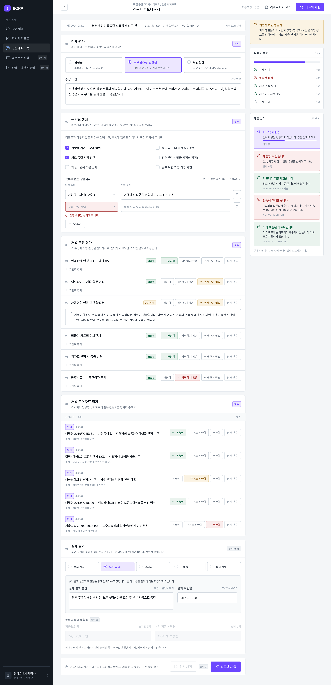
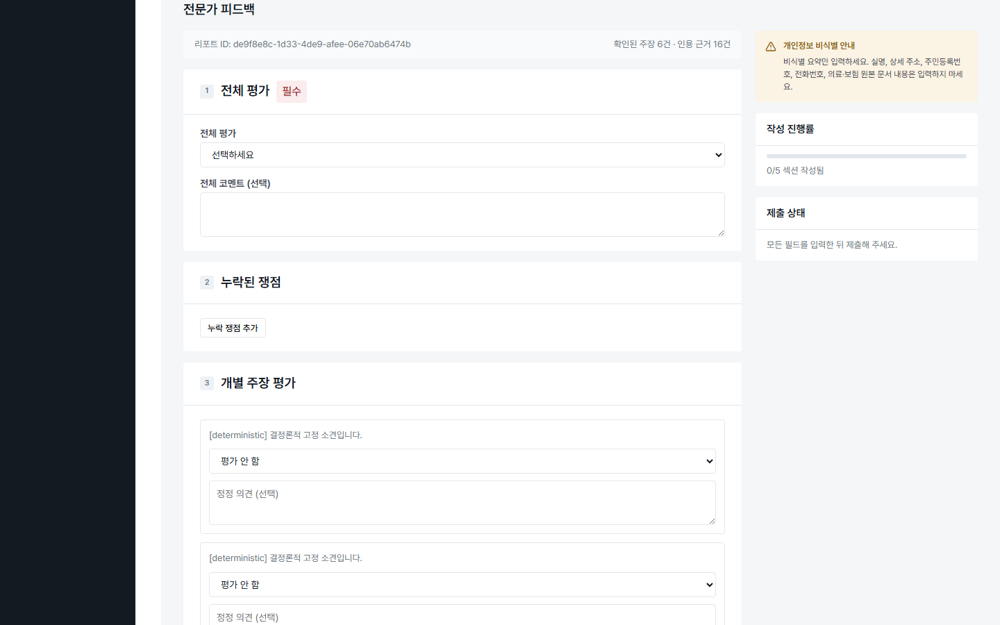
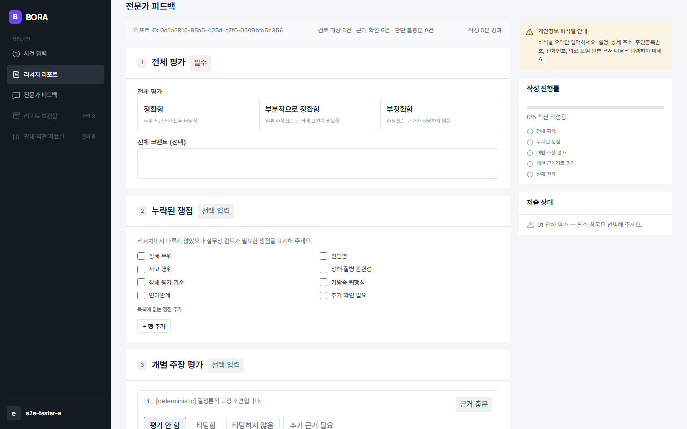

| viewport | 1440×900 (Pencil은 2x export, 실측 CSS 환산 1440×900 상당) | ||
|---|---|---|---|
| commit SHA | f6ea25a614782ae60c1e2c0ceaf575483d59087c(plan/SPEC-UI-MIGRATION-001) | ||
| route | /cases/<caseId>#expert-feedback (인증된 테스터 세션) | ||
| scroll 위치 | "top-of-page"라는 표현은 뷰포트/문서 최상단을 의미하지 않는다 — 실제로는 `#expert-feedback` 앵커로 이동한 직후, 그 앵커 대상 섹션의 시작점이 뷰포트 상단에 오도록 브라우저가 스크롤한 위치를 캡처한 것이다(fullPage 아님, 뷰포트 1장). 이 문서의 다른 곳에서 "top-of-page"와 "anchor로 이동한 섹션 시작점"을 혼용하지 않는다 — 사건 입력/로그인처럼 실제 문서 최상단(스크롤 없음)을 캡처한 화면과는 스크롤 상태가 다르다는 점에 유의. 모바일 전체 페이지는 별도로 `expert-feedback-initial-390-fullpage.png`에서 확인 가능(이쪽은 fullPage라 앵커 섹션 앞의 App Shell 콘텐츠도 함께 보인다). | ||
| 데이터 fixture | Before/After 동일 입력("계단에서 넘어져 발목을 다쳤습니다." / "발목 인대 파열" / "발목" / 2026-01-15)으로 생성한 사건의 리포트에 대한 피드백 화면 — claim 6건·근거 확인 6건·판단 불충분 0건으로 Before/After 조건이 동일하다. Pencil은 정적 mock이라 claim·evidence 개수가 정확히 일치하지는 않는다(구조/레이아웃 비교 목적). | ||
| 측정한 주요 차이(Before → After) |
|
||
| 의도적 편차(사용자 승인 완료) |
승인 시점: 2026-09-07 (Round 5 진행 중, `progress.md` "Round 5 — 전문가 피드백 화면 Pencil Gap Matrix + 구현" 섹션 기록 시점). 확인 방식: 오케스트레이터가 AskUserQuestion으로 3건을 각각 질의했고, 사용자는 매번 "(권장)" 라벨이 붙은 옵션을 선택했다(승인된 옵션 = 아래 각 항목).
모바일 IA 분리는 별개 사안 — 위 3건과 달리, "모바일에서 리포트/피드백을
접기·펼치기 또는 별도 진입점으로 분리할지"는 이 SPEC 범위의
현재 실패 항목이 아니라 후속 SPEC 후보다(라우트 분리나 아코디언 UI는 기존
|
||